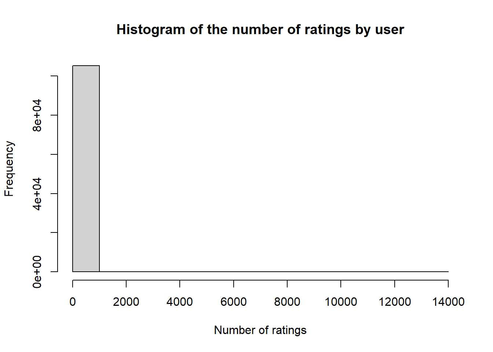
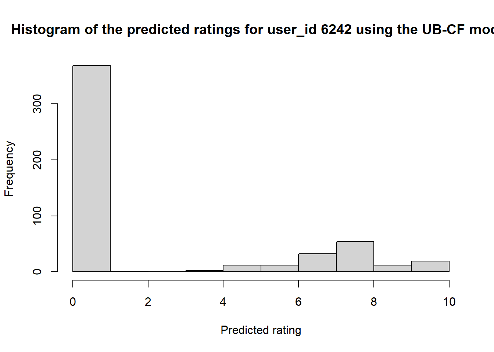
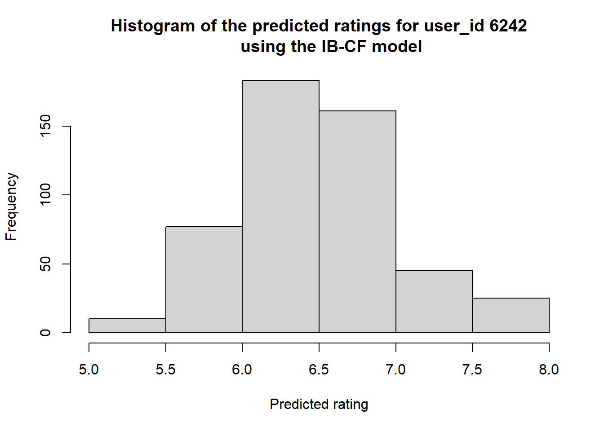
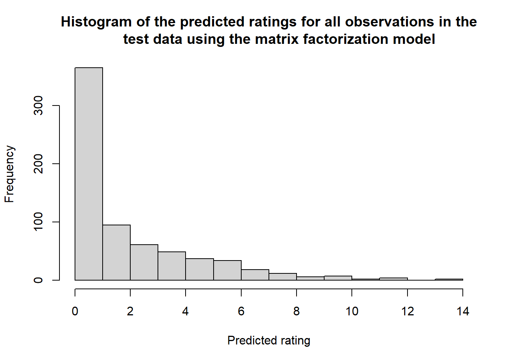
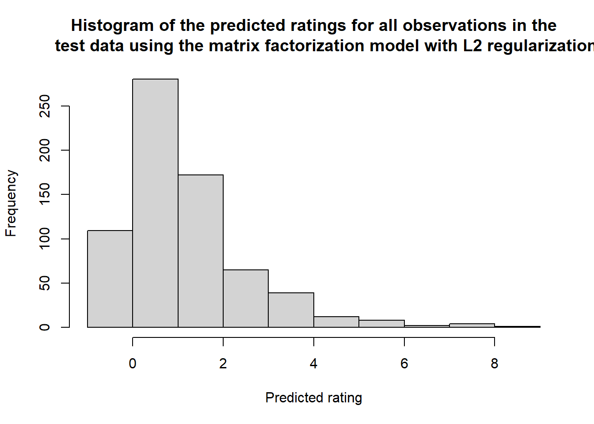
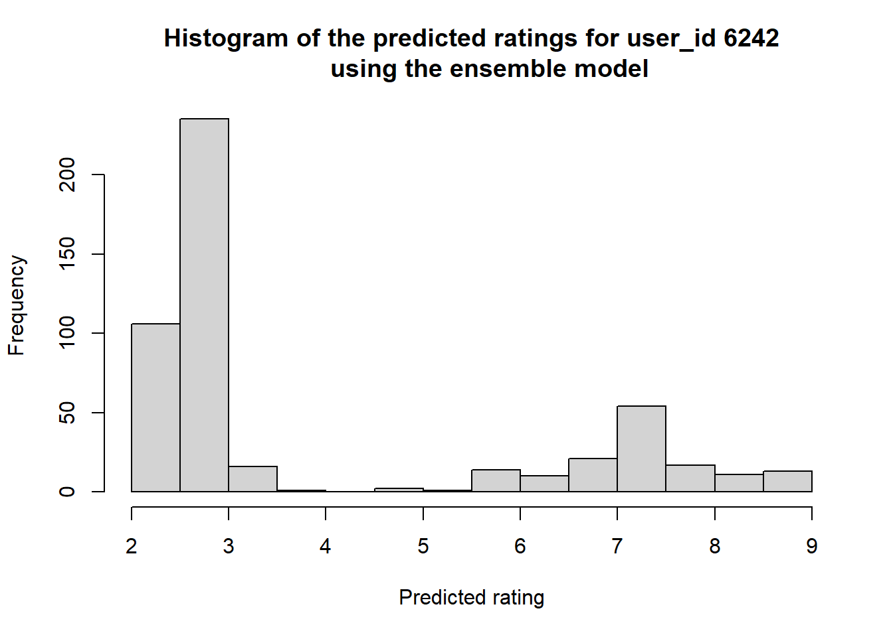

In this project we will use the Book-Crossing dataset here, from Kaggle to build a recommender system for books.The dataset contains three files
Users.csv: anonymized userId and user demorgraphic (age, location) where available.
Books.csv : valid ISBN, basic information about the book (Book-Title, Book-Author, Year-Of-Publication, Publisher) and extra cover image URLs in different sizes (Image-URL-S, Image-URL-M, Image-URL-L).
Ratings.csv : explicit, scaled or implicit ratings (Book-Rating)
Objectives
Build recommender systems based on various collaborative filtering approaches
user-based (UB)
item-based (IB))
matrix factorization
Use cross-validation to evaluate the accuracy of the matrix factorization recommender system with and without regularization.
Build an ensemble model using the three collaborative filtering approached and evaluate the accuracy.
Attaching package: 'dplyr'
The following objects are masked from 'package:stats':
filter, lag
The following objects are masked from 'package:base':
intersect, setdiff, setequal, union
Attaching package: 'reshape2'
The following object is masked from 'package:tidyr':
smiths
Attaching package: 'Matrix'
The following objects are masked from 'package:tidyr':
expand, pack, unpack
Attaching package: 'proxy'
The following object is masked from 'package:Matrix':
as.matrix
The following objects are masked from 'package:stats':
as.dist, dist
The following object is masked from 'package:base':
as.matrix
Exploratory Data Analysis
Data exploration
The datasets are very large, with the observations for the books, users and ratings being 271 360, 278 858 and 1 149 780, respectively. Rating has a lot more observations than book and users because one user can rate a book multiple times.
#Get the number of observations and features for datadim(books)
[1] 271360 8
dim(users)
[1] 278858 3
dim(ratings)
[1] 1149780 3
There is information on a total of 271 360 books in the books dataset, but in ratings there is a total of 340 556 books. For these extra books in ratings we do not have information either than the ISBN for them. In the users dataset, there is a total of 278 858 unique user ids, however, only 105 283 unique users have rated books. So more than half of the users in the system have not rated even a single book.
#How many books are rated of the books in in the book datasetlength(unique(books$ISBN))
[1] 271360
length(unique(ratings$ISBN))
[1] 340556
#How many users have rating out of the users in in the users datasetlength(unique(users$User.ID))
[1] 278858
length(unique(ratings$User.ID))
[1] 105283
Data engineering
Changing column names
We will change the column names in all the datasets into simpler names that are all in lower case for ease while working with the data.
#Original datahead(users, 3)
User.ID Location Age
1 1 nyc, new york, usa NA
2 2 stockton, california, usa 18
3 3 moscow, yukon territory, russia NA
colnames(users)
[1] "User.ID" "Location" "Age"
#Rename the colnamesusers <- users |>rename("user_id"="User.ID","location"="Location","age"="Age")head(users,3)
user_id location age
1 1 nyc, new york, usa NA
2 2 stockton, california, usa 18
3 3 moscow, yukon territory, russia NA
#Original datahead(books, 3)
ISBN Book.Title Book.Author Year.Of.Publication
1 0195153448 Classical Mythology Mark P. O. Morford 2002
2 0002005018 Clara Callan Richard Bruce Wright 2001
3 0060973129 Decision in Normandy Carlo D'Este 1991
Publisher
1 Oxford University Press
2 HarperFlamingo Canada
3 HarperPerennial
Image.URL.S
1 http://images.amazon.com/images/P/0195153448.01.THUMBZZZ.jpg
2 http://images.amazon.com/images/P/0002005018.01.THUMBZZZ.jpg
3 http://images.amazon.com/images/P/0060973129.01.THUMBZZZ.jpg
Image.URL.M
1 http://images.amazon.com/images/P/0195153448.01.MZZZZZZZ.jpg
2 http://images.amazon.com/images/P/0002005018.01.MZZZZZZZ.jpg
3 http://images.amazon.com/images/P/0060973129.01.MZZZZZZZ.jpg
Image.URL.L
1 http://images.amazon.com/images/P/0195153448.01.LZZZZZZZ.jpg
2 http://images.amazon.com/images/P/0002005018.01.LZZZZZZZ.jpg
3 http://images.amazon.com/images/P/0060973129.01.LZZZZZZZ.jpg
#Rename the colnamesbooks <- books |>rename("title"="Book.Title","author"="Book.Author","year"="Year.Of.Publication", "publisher"="Publisher","image_url"="Image.URL.S")head(books, 3)
ISBN title author year
1 0195153448 Classical Mythology Mark P. O. Morford 2002
2 0002005018 Clara Callan Richard Bruce Wright 2001
3 0060973129 Decision in Normandy Carlo D'Este 1991
publisher
1 Oxford University Press
2 HarperFlamingo Canada
3 HarperPerennial
image_url
1 http://images.amazon.com/images/P/0195153448.01.THUMBZZZ.jpg
2 http://images.amazon.com/images/P/0002005018.01.THUMBZZZ.jpg
3 http://images.amazon.com/images/P/0060973129.01.THUMBZZZ.jpg
In the books dataset, we will also removed the the image URL for the small and large images, and only kept medium.
The top book rater user 11676 has rated 13602 books, I was interested to know the age of this person to estimate roughly how many books they read a year, but their age is NA. We can say this person is a bookworm or they just rate books for a hobby. There are also quite a number of users who have only rated one book.
hist(ratings_count$count, main ="Histogram of the number of ratings by user", xlab ="Number of ratings")

The histogram for the number of ratings is skewed to the right with many users having rated less than 200 books, however there are uses who have rated way more than 200 books too.
Filter out the ratings
For statistical significance of the model, we will keep only the users who have rated 200 or more books.
#Store the user_ids of all the users who have rated 200 or more bookscommon_users <- (ratings_count$user_id[ratings_count$count>=200]) #Keep these users in a df, users_200 <- ratings[ratings$user_id%in%common_users,] #3 var: user_id, ISBN, ratinglength(unique(users_200$user_id))
The user_200 data frame contains 899 unique user_ids, but total observations is 527 556. This is expected since each user in this data frame has rated more than 200 books.
Now from the df with more than users_200, we also want to only keep the books that have a lot (more than 50) of ratings.
#Count the ratings each book receivesbook_ratings_count <- users_200 %>%group_by(ISBN) %>%summarise(total_ratings =n())#Store the ISBNs of the books with 50 ratings and morecommon_books <- (book_ratings_count$ISBN[book_ratings_count$total_ratings>=50])#create dataframe that's a subset of the users who have rated 200 books and more. users200_books50 <- users_200[users_200$ISBN%in%common_books,] # 3 var: user_id, ISBN, rating#To get the title of the bookusers200_books50 <-merge(users200_books50, books[,c(1,2)], by ="ISBN")#To get the total number of rating for a bookusers200_books50 <- users200_books50 %>%group_by(ISBN) %>%mutate(total_ratings =n()) %>%ungroup()head(users200_books50, 10000)[sample(1:1000,3),]
# A tibble: 3 × 5
ISBN user_id rating title total_ratings
<chr> <int> <int> <chr> <int>
1 0060921145 88733 0 Animal Dreams 58
2 0060392452 164323 8 Stupid White Men ...and Other Sorry E… 78
3 0060938455 6251 0 Fast Food Nation: The Dark Side of th… 89
The rating is the rating user \(\boldsymbol x\), given by user_id, gave a particular book given by ISBN and title. The total_ratings is the total number of ratings the book got.
Filter out users that are not in Canada
To make our recommender system specific, we will only focus on the users in Canada.
#To get location of the userusers200_books50 <-merge(users200_books50, users[, c(1,2)], by ="user_id")#Search in location for canada and grep these obsercatonsusersCA_final <- users200_books50[grepl("canada", users200_books50$location, ignore.case =TRUE), ]length(unique(usersCA_final$user_id)) # 87 unique users
[1] 87
length(unique(usersCA_final$ISBN))
[1] 521
#keep only the columns we will need to analysisfinal_data <- usersCA_final[,c("user_id", "ISBN", "rating", "title" , "total_ratings")]
After filtering for users in Canada, we were left with 87 unique users, and 521 unique books. This is the dataset we will use for building our model.
Model Building
Reshape data
A pre-requisite for building user based and item collaborative filtering models is to have the data in a matrix form. So we formatted our data into a wide format then matrix.
#remove duplicatesfinal_data <- final_data %>%distinct(user_id,title, .keep_all =TRUE)#prepare data for pivotingpre_pivot <- final_data[, c(-2,-5)]# Pivot the data to wide format, ensuring aggregation is by user_idfinal_data_pivot <- pre_pivot %>%pivot_wider(names_from = title,values_from = rating)#remove the other columns(ISBN, total_ratings)#final_data_pivot <- final_data_pivot[,c(-2,-3)]user_ids <-as.character(unlist(final_data_pivot[,1]))#convert to matrix formfinal_data_matrix <-as.matrix(final_data_pivot[,-1])rownames(final_data_matrix) <- user_ids# Split data into training and test sets (80/20 split)set.seed(123) # for reproducibilitytest_indices <-sample(1:nrow(final_data_matrix), size =0.2*nrow(final_data_matrix))train_data_matrix <- final_data_matrix[-test_indices, ]test_data_matrix <- final_data_matrix[test_indices, ]# save as csv for later Excel demo#write.csv(final_data_matrix, "data/ratings_for_excel_example.csv")
User Based Collaborative Filtering
Similarity Matrix
To get started with the user-based methods, we computed the user similarity matrix. This matrix is constructed using the cosine method: \[cos(\theta) = \frac{\boldsymbol x \cdot \boldsymbol y}{||\boldsymbol x|| \ ||\boldsymbol y||} = \frac{\sum_{i=1}^{n}x_iy_i}{\sqrt{\sum_{i=1}^{n}x^2_i} \sqrt{\sum_{i=1}^{n}y^2_i}}\] .
The dimensions is n x n, where n is the number of users. The values indicate how similar two users are, based on their rating of the books they have read.
# Compute the user similarity matrixsimilarity_matrix <-as.matrix(simil(train_data_matrix, method ="cosine"))# View a sample of the similarity matrixsimilarity_matrix[1:5, 1:5]
6242 16966 23288 26583 27617
6242 NA 0 NA 1 1
16966 0 NA 1 NA 1
23288 NA 1 NA NA NA
26583 1 NA NA NA NA
27617 1 1 NA NA NA
Prediction Matrix
# Function to predict ratings based on user-based collaborative filteringpredict_ratings_ubcf <-function(user_id, similarity_matrix, rating_matrix, k =10) {# Find the top-k similar users for the given user user_similarities <- similarity_matrix[user_id,] top_k_users <-order(user_similarities, decreasing =TRUE)[1:k]# Predict the rating for each book by taking a weighted average of the ratings pred_ratings <-rep(0, ncol(rating_matrix))for (book in1:ncol(rating_matrix)) { ratings_by_similar_users <- rating_matrix[top_k_users, book] similarities <- user_similarities[top_k_users]# Only use users who have rated the book non_zero_ratings <- ratings_by_similar_users >0if (sum(non_zero_ratings, na.rm =TRUE) >0) { pred_ratings[book] <-sum(similarities[non_zero_ratings] * ratings_by_similar_users[non_zero_ratings], na.rm =TRUE) /sum(similarities[non_zero_ratings], na.rm =TRUE) } }return(pred_ratings)}
Predicted ratings for a particular user
Using the predict_ratings_ubcf function, we have calculate an example of the rating user “6242” would give all the book.
# Get the actual ratings for user 6242actual_ratings_user_6242 <- final_data_matrix[1,]pred_ratings_user_6242 <-predict_ratings_ubcf("6242", similarity_matrix, final_data_matrix)# Show the predicted and actual ratings side by sidet1 <-data.frame(Book =colnames(final_data_matrix), Actual_Rating = actual_ratings_user_6242, Predicted_Rating = pred_ratings_user_6242)# View predictions in a datatableDT::datatable(t1, rownames =FALSE)
Get top 5 recommendations
We were also interested to find out what are the top 5 books to recommend to this user, so we cnstructed a get_recommendations function to output these book.
# Function to get book recommendations for a given userget_recommendations <-function(user_id, similarity_matrix, rating_matrix, k =10, num_recommendations =5) {# Get predicted ratings for the user pred_ratings <-predict_ratings_ubcf(user_id, similarity_matrix, rating_matrix, k)# Get the actual ratings for the user actual_ratings <- rating_matrix[user_id,]# Filter out books that the user has already rated (we only recommend books the user hasn't rated) unrated_books <-which(actual_ratings ==0|is.na(actual_ratings))# Sort the predicted ratings for the unrated books in descending order recommended_books <-order(pred_ratings[unrated_books], decreasing =TRUE)# Get the top 'num_recommendations' books top_recommendations <- unrated_books[recommended_books[1:num_recommendations]]# Return the recommended book names and predicted ratingsdata.frame(Book =colnames(rating_matrix)[top_recommendations],Predicted_Rating = pred_ratings[top_recommendations])}# Example: Get 5 recommendations for user 6242 using UBCF with k=10recommendations_user_6242 <-get_recommendations("6242", similarity_matrix, final_data_matrix, k =10, num_recommendations =5)datatable(recommendations_user_6242, rownames =FALSE)
To verify that the model and the functions were actually working, we also got recommendations for a different user.
# Example: Get 5 recommendations for user 41841 using UBCF with k=10recommendations_user_41841 <-get_recommendations("41841", similarity_matrix, final_data_matrix, k =10, num_recommendations =5)datatable(recommendations_user_41841)
This user indeed got a different set of books.
Item-Based Collaborative Filtering
For item based we also followed the same logic as in the user based model. We are still using the same data.
Similarity Matrix
The similarity matrix here shows similarity between the books. So which books are commonly read together and recieved similar ratings.
# Compute the item similarity matrixitem_similarity_matrix <-as.matrix(simil(t(final_data_matrix), method ="cosine"))# View a sample of the item similarity matrix#item_similarity_matrix[1:5, 1:5]
Prediction Matrix
# Function to predict ratings based on item-based collaborative filteringpredict_ratings_ibcf <-function(user_id, item_similarity_matrix, rating_matrix, k =10) {# Get the user's ratings user_ratings <- rating_matrix[user_id,]# Predict the rating for each book pred_ratings <-rep(0, ncol(rating_matrix))for (book in1:ncol(rating_matrix)) { similarities <- item_similarity_matrix[book,]# Find the books that the user has rated, ignoring NAs rated_books <-!is.na(user_ratings) & user_ratings >0# Only proceed if there are rated booksif (sum(rated_books, na.rm =TRUE) >0) { pred_ratings[book] <-sum(similarities[rated_books] * user_ratings[rated_books], na.rm =TRUE) /sum(similarities[rated_books], na.rm =TRUE) } else { pred_ratings[book] <-NA# Set to NA if no rated books are found } }return(pred_ratings)}
Predicted ratings for a particular user
Using the predict_ratings_ibcf function, we have calculate an example of the rating user “6242” would give all the book. We will compare these with the ratings the user-based CF model gave.
# Get the actual ratings for user 6242actual_ratings_user_6242_ibcf <- final_data_matrix[1,]pred_ratings_user_6242_ibcf <-predict_ratings_ibcf("6242", item_similarity_matrix, final_data_matrix)# Show the predicted and actual ratings side by sidet2 <-data.frame(Book =colnames(final_data_matrix), Actual_Rating = actual_ratings_user_6242_ibcf, Predicted_Rating =round(pred_ratings_user_6242_ibcf, 2))datatable(t2, rownames =FALSE)
In comparison to the UB-CF model, this model seems to be giving relatively high ratings, With all the ratings lying close to the mean rating which is 5.
The UB-CF model has most of the predicted ratings lying between 0 and 1 and and very large like 10. The distribution is skewed to the right.
hist(t1$Predicted_Rating, main ="Histogram of the predicted ratings for user_id 6242 using the UB-CF model",xlab ="Predicted rating" )

The IB-CF predicted rating are normally distributed around 6.5, with no predicted ratings less than 5.
hist(t2$Predicted_Rating, main ="Histogram of the predicted ratings for user_id 6242 using the IB-CF model",xlab ="Predicted rating" )

Get top 5 recommendations
# Function to get book recommendations for a given user using IBCFget_recommendations_ibcf <-function(user_id, item_similarity_matrix, rating_matrix, k =10, num_recommendations =5) {# Convert user_id to numeric index if necessaryif (is.character(user_id)) { user_index <-match(user_id, rownames(rating_matrix)) # Find user row number if it's a string } else { user_index <- user_id # If already numeric, use as is }# Check if user_id exists in the matrixif (is.na(user_index)) {stop("User ID not found in the rating matrix.") }# Get predicted ratings for the user using the predict_ratings_ibcf function pred_ratings <-predict_ratings_ibcf(user_index, item_similarity_matrix, rating_matrix, k)# Get the actual ratings for the user actual_ratings <- rating_matrix[user_index,]# Filter out books that the user has already rated (i.e., we only recommend unrated books) unrated_books <-which(actual_ratings ==0|is.na(actual_ratings))# Sort the predicted ratings for the unrated books in descending order sorted_unrated_books <-order(pred_ratings[unrated_books], decreasing =TRUE)# Select the top 'num_recommendations' unrated books top_recommendations <- unrated_books[sorted_unrated_books[1:num_recommendations]]# Return the recommended book names and predicted ratings in a data frame recommended_books <-data.frame(Book =colnames(rating_matrix)[top_recommendations],Predicted_Rating = pred_ratings[top_recommendations] )return(recommended_books)}# Example: Get 5 recommendations for user 6242 using IBCF with k=10recommendations_user_6242_ibcf <-get_recommendations_ibcf("6242", item_similarity_matrix, final_data_matrix, k =10, num_recommendations =5)# View the recommendationsdatatable(recommendations_user_6242_ibcf, rownames =FALSE)
The two models have all different book in the top five recommended books. The types of books by each recommender system also differ, the books by the UB-CF have common themes around emotional depth, personal growth, and relationships. While the book recommended by the IB-CF are all thriller, horror, or science fiction genres, except for ‘Men Are from Mars, Women Are from Venus: A Practical Guide for Improving Communication and Getting What You Want in Your Relationship’, which is more relationship themed.
Matrix factorization
Prepare data for recosystem
In order to use the recosystem we will change the id variables (here user_id and ISBN) to be integers starting at either 0 or 1.
#Create df with ISBN, user_id, rating and titlemf_data <- usersCA_final[,c(-5,-6)]# Create new integer IDs for users and itemsuser_id <-data.frame(user_id =unique(mf_data$user_id), new_userId =0:(length(unique(mf_data$user_id)) -1))ISBN <-data.frame(ISBN =unique(mf_data$ISBN), new_ISBN =0:(length(unique(mf_data$ISBN)) -1))# Join these new IDs back to your datasetmf_data <- mf_data |>left_join(user_id, by ="user_id") |>left_join(ISBN, by ="ISBN")# Select the relevant columns with new IDsmf_data <- mf_data |> dplyr::select(user_id = new_userId, ISBN = new_ISBN, rating, title)
For cross validation, we allocate 80% of each user’s ratings to a training dataset, and use the remaining 20% as a test set.
# Split the data into training and testing sets (80% train, 20% test)set.seed(123)test_data <- mf_data |>group_by(user_id) |>slice_sample(prop =0.2) |>ungroup()train_data <-anti_join(mf_data, test_data, by =c("user_id", "ISBN"))
We then set up the ratings data in the format required by recosystem.
# Prepare the data for recosystemreco_train <-data_memory(user_index = train_data$user_id,item_index = train_data$ISBN,rating = train_data$rating)reco_test <-data_memory(user_index = test_data$user_id,item_index = test_data$ISBN,rating = test_data$rating)
Build model
# Initialize the Recosystem modelrs <-Reco()
We now train a single matrix factorization model with specific hyperparameters.
# Train the model with specific hyperparametersrs$train(reco_train, opts =list(dim =10, # Number of latent factorsnmf =TRUE, # Perform non-negative matrix factorizationniter =50, # Number of iterationsverbose =FALSE# Suppress verbose output))
Predictions and Model evaluation
# Predict ratings on the test setMF_pred <- rs$predict(reco_test)# Calculate RMSE for predictionsrmse <-sqrt(mean((MF_pred - test_data$rating)^2))cat("Matrix Factorisation RMSE: ", round(rmse, 2))
Matrix Factorisation RMSE: 4.04
# Store the predictions in the test datasetpred_data <- test_data |>mutate(predicted_rating =round(MF_pred,2) )# View predictions in a datatabledatatable(pred_data, rownames =FALSE)
Let’s look at the distribution of the predicted ratings
hist(pred_data$predicted_rating, main ="Histogram of the predicted ratings for all observations in the test data using the matrix factorization model",xlab ="Predicted rating" )

The distribution is skewed to the right, most observations have a predicted ratings between 0 and 1. And the number of observations decreases as the rating gets higher. The model is producing raw predictions without any constraints or normalization, because we also observe ratings greater than 10.
# Predict ratings for the test setpred_ratings <- rs$predict(reco_test)# Calculate RMSE (Root Mean Squared Error) as a measure of accuracyrmse <-sqrt(mean((pred_ratings - test_data$rating)^2))cat("Matrix Factorisation RMSE (Regularization):", round(rmse, 2))
Matrix Factorisation RMSE (Regularization): 3.61
There is a significant decrease in RMSE when regularization is applied.
# Predict ratings for the test setMF_pred_l2 <- rs$predict(reco_test)# Store predictions in the test dataset with the predicted ratings after L2 regularizationpred_data_l2 <- test_data |>mutate(predicted_rating =round(MF_pred_l2, 2) # Rounding predictions to 2 decimal places )# View predictions using the datatable librarydatatable(pred_data_l2, rownames =FALSE)
Let’s look at the distribution of these the predicted ratings
hist(pred_data_l2$predicted_rating, main ="Histogram of the predicted ratings for all observations in the test data using the matrix factorization model with L2 regularization",xlab ="Predicted rating" )

Most of the predicted ratings also lies between 0 and 1. And the number of observations decreases as the rating gets higher. The model is also producing raw predictions without any constraints or normalization, as there is a number of observations with predicted rating less than 0, but none with more than a rating of 10.
Ensemble model of the 2 methods
Get the predictions from all IB-CF and UB-CF models
#Assign weight based on observed prediction performanceweights <-c(0.6, 0.4) # More weight to IBCF# Function to predict ratings using an ensemble approach, using weightspredict_ratings_ensemble <-function(user_id, similarity_matrix, item_similarity_matrix, rating_matrix, k =10, weights) {# Get predictions from each method ubcf_predictions <-predict_ratings_ubcf(user_id, similarity_matrix, rating_matrix, k) ibcf_predictions <-predict_ratings_ibcf(user_id, item_similarity_matrix, rating_matrix, k)#mf_predictions <- rs$predict(rating_data)# Combine predictions using weighted average combined_predictions <- (weights[1] * ubcf_predictions + weights[2] * ibcf_predictions )return(combined_predictions)}
# Predict ratings using the ensemble modelpredicted_ratings <-predict_ratings_ensemble("6242", similarity_matrix, item_similarity_matrix, final_data_matrix, k =10, weights = weights)# View the predictionshist(predicted_ratings, main ="Histogram of the predicted ratings for user_id 6242 using the ensemble model",xlab ="Predicted rating")

Conclusion
The Matrix factorization model with regularization works well. We were not able to test the accuracy of the UB-CF and the IB-CF models. This could be a project for the future to test all four model’s accuracy and the create a website using the most accurate one or an ensemble of the top two best performing. The website can have a log in that will capture the user’s ID and base on the book they searched we can also give the top 10 recommendations. To incoporated all the other books and users that were not included in this model, we can do a cluster analysis.